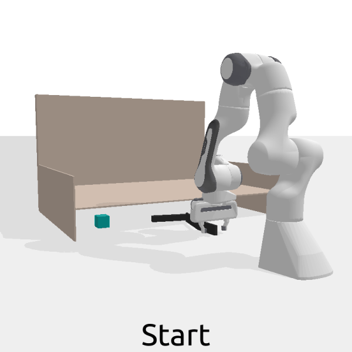

Animated visualizations of tools only over the course of training (2UAy)

Fetch cube
Open drawer
Figure R1: Evolution of tool designs for specific task goals over the course of training. Note that these evolutions are visualized for shown fixed goals for the sake of visualization (designs for other goals/starting object positions converge to different tools).
Due to time constraints, not all policies have fully converged in this visualization.
Comparisons of final tools designed by ours and compared methods for varying goals (2UAy)
Ours
Hardware-as-Policy / Ha 2018
Ours (PPO, shared-arch)
Figure R2: Comparison of final tool designs in the fetch cube task by our method, prior work (HWasP-minimal/Ha 2018), and the shared-architecture ablation of our method that uses PPO to jointly optimize all parameters.
Note that our method is able to generate unique tools for each starting object position to solve them more efficiently. Hooked tools can pull the objects more stably, and shorter, U-shaped tools on the right can quickly pull the cube
out when it is not far under the overhang.
Additional Tasks (D5az)
Open drawer
Open cabinet
Figure R3: Visualizations of learned designs and control policies (left) and training curves (right) of learned design and control policies for new cabinet and drawer opening tasks.
A return of 10 or above indicates task success, measured by opening the drawer or cabinet past a required point. Error bars are computed across 2 random seeds due to computational and time constraints.
Top: The robot needs to open the bottom drawer of a dresser, a common household scenario.
Bottom: The robot must open a cabinet that is further away than it can reach with its gripper.